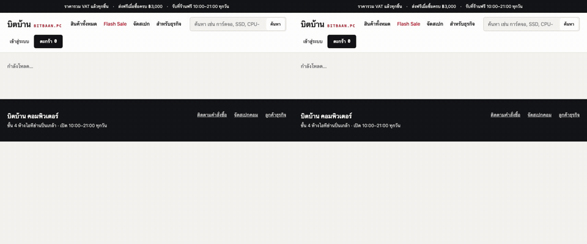

การบ้านข้อ 1 · TC ทุกตัวอ้างกลับไปที่ TEST-PLAN.md · อัปเดตล่าสุด 7 พ.ย. 2026
| คำสั่ง | ครอบ TC | ผลล่าสุด |
|---|---|---|
npm test | ทุก TC ชั้น api และ ui (chromium · firefox · webkit) | 166 ผ่าน · 1m 15s |
npm run test:race | TC-RACE-01 ถึง TC-RACE-05 · 50 รอบ × N = 2, 5, 10 | 7 ผ่าน · 49s |
npm run test:property | P2–P6 อย่างละ 250–1,000 แบบ · seed 2026 | 5 ผ่าน · 2m 36s |
npm run test:oracle | P1 + ตาราง quote 27 แถว | ข้าม — รอ oracle อิสระ |
cd ../backend && go test ./internal/... | TC ชั้น unit (ค่าขอบที่หน้าเว็บไปไม่ถึง) | ผ่านทั้ง 2 package |
node ../mutation/run.mjs | mutation testing ของโมดูลกฎ (ขั้น 4) | ดู MUTATION-REPORT.md |
| ข้อกำหนด | ทั้งหมด | มี TC | อ้างอิง |
|---|---|---|---|
| FR · ระบบต้องทำอะไรได้ | 59 | 59 | TEST-PLAN.md §4.2 |
| BR · กฎของร้าน | 40 | 40 | §4.1 |
| NFR · ต้องดีแค่ไหน | 16 | 16 | §4.3 |
| ค่าขอบ E01–E141 | 141 | 141 | §4.4 |
TC ที่ยังติดป้าย [O-ยังไม่ยืนยัน] | 105 | 56 | §5 · QUESTIONS-TO-OWNER.md |
| รหัส | เรื่อง | กฎ | TC ที่จับได้ | สถานะ |
|---|---|---|---|---|
BUG-EXPLORE-01 | ประกอบฟรีทั้งที่ซื้อ CPU 2 ตัว | BR-21 | TC-BUILD-13b | แก้แล้ว 7 พ.ย. |
B1 | flash sale ยังใช้ได้ที่ 13:00:00 | BR-06 | TC-PRICE-01 · Q06 | จับได้ (BUG_MODE=1) |
B2 | GAMER5 คิดก่อนหักส่วนลดสมาชิก | BR-18 | TC-COUPON-04 + 4 TC | จับได้ (BUG_MODE=1) |
B3 | จ่ายได้หลังหมดเวลากันของ | BR-30 | TC-ORDER-06 · TC-ORDER-07 | จับได้ (BUG_MODE=1) |
รายละเอียดทั้งหมดอยู่ใน e2e/triage.json · BUG-HUNT.md · EXPLORATION.md
กรอบแดง = element ที่ test กำลังตรวจ · ค้างภาพผลลัพธ์ 3 วินาทีตอนท้าย · สร้างใหม่ด้วย npm run evidence
TC-RACE-02 · สองคนกดยืนยันพร้อมกันบนหน้าเว็บ ของชิ้นสุดท้ายได้คนเดียว — BR-32 · FR-36 · FR-37 (9.5 วินาที)
TC-ACCT-12 · คนไม่ล็อกอินติดตามออเดอร์จากลิงก์ท้ายเว็บด้วยเลขออเดอร์ + เบอร์ — FR-35 · C6 (9.5 วินาที)TC-BUILD-19 · ใส่ตะกร้าทั้งชุด ชิ้นที่มีอยู่แล้วต้องเพิ่มจำนวน ไม่หายไป — FR-16 (9.5 วินาที)TC-BUILD-21 · ใส่ตะกร้าทั้งชุดไม่เกินสิทธิ์คนละ 1 ใบ และบอกว่าไม่ได้เพิ่มชิ้นไหน — BR-31 · FR-16 · C5 (9.5 วินาที)TC-BUILD-22 · "ให้ร้านประกอบ" มีเฉพาะตะกร้าที่มาจากหน้าจัดสเปก — BR-21 · C2 (9.5 วินาที)TC-CANCEL-08 · หน้าออเดอร์แสดงยอดคืนก่อนกดยืนยัน และมีลิงก์เคลมประกันแยก — FR-48 · FR-49 (9.5 วินาที)TC-NFR-14 · <html> มี data-ready และ data-bug-mode ตามแม่แบบผู้สอน (7.3 วินาที)TC-PRICE-13 · บรรทัดส่วนลดที่เป็น 0 ไม่แสดง แต่ยอดยังลงตัว — FR-25 (9.5 วินาที)TC-PRICE-14 · flash sale เริ่มระหว่างอยู่ในตะกร้า ต้องบอกว่าราคาเปลี่ยน — FR-30 (9.5 วินาที)TC-SHIP-07 · เลือกส่งด่วนแล้วเปลี่ยนจังหวัดออกนอก กทม. ต้องกลับเป็นส่งปกติ — FR-32 · C4 (9.5 วินาที)TC-ACCT-08 · ล็อกอินแล้วเห็นระดับสมาชิกและยอดที่ขาด — FR-29 · FR-57 (9.5 วินาที)TC-BUILD-09 · ตัวเลือกที่ใส่กันไม่ได้ถูกปิดพร้อมเหตุผล — FR-10 · BR-25 · BR-26 (9.1 วินาที)TC-BUILD-10 · เปลี่ยนการ์ดจอแล้วพาวเวอร์ไม่พอ ต้องเตือน ไม่ถอดให้เอง — FR-14 (9.5 วินาที)TC-CAT-03 · สินค้าที่ขายไม่ได้แล้ว ปุ่มใส่ตะกร้ากดไม่ได้ — FR-03 (9.1 วินาที)TC-CAT-05 · ป้าย flash sale และราคาขีดฆ่าแสดงเฉพาะในช่วง — FR-05 (9.5 วินาที)TC-NFR-01 · ใช้บนมือถือกว้าง 375px ได้ทุกหน้า ไม่มีเลื่อนซ้ายขวา — NFR-01 (9.4 วินาที)TC-NFR-07 · ปุ่มและบรรทัดราคามีชื่อให้เครื่องมือหาเจอ — NFR-09 (9.5 วินาที)TC-NFR-08 · ทุกหน้ามี data-bug-mode ตรงกับโหมดจริง (8.6 วินาที)TC-ORDER-05 · หน้าจ่ายเงินแสดงเวลาที่กันถึงและนับถอยหลัง — FR-39 · NFR-16 (9.5 วินาที)TC-PRICE-11 · ใบสรุปราคาบวกลบลงตัวและเรียงตามลำดับของร้าน — FR-24 · FR-25 (9.5 วินาที)../RACE-REPORT.md — การแย่งของ พร้อมหลักฐานก่อน/หลังถอดกลไก../PROPERTY-REPORT.md — property-based testing และสถานะ oracle../MUTATION-REPORT.md — ความแข็งแรงของแผนเป็นตัวเลข../BUG-HUNT.md — ล่าบั๊ก BUG_MODE=1 และ BUG_MODE=2test-report/html/index.html — รายงานของ Playwright (สร้างหลังรัน npm test)